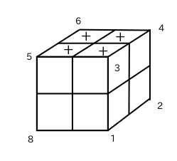
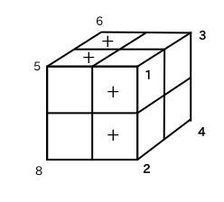
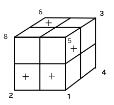

と表記して置換という。
--
## 対称群
n個のものの置換全てと置換の積を合わせて考えてものをn次の対称群といい、
\\(S_n\\)と表記する。
置換の積の例(3次対称群)。
\\[
\left(
\begin{array}{ccc}
1 & 2 & 3 \\\\
3 & 1 & 2 \\\\
\end{array}
\right)
\circ
\left(
\begin{array}{ccc}
1 & 2 & 3 \\\\
1 & 3 & 2 \\\\
\end{array}
\right)
=
\left(
\begin{array}{ccc}
1 & 2 & 3 \\\\
2 & 1 & 3 \\\\
\end{array}
\right)
\\]
---
## 小方体の向き(\\(C_3^8\\))
ルービックキューブの上面と下面に印'+'を付け、
この印がどれだけ回転しているかで向きと決める。

手順Rを実行
\\(\rightarrow\\)

---
## 小方体の向き(\\(C_3^8\\))
小方体1は3に移動し、3の'+'印から240度回転したので、小方体1の向きは
2(120度を単位に考える)。8個の小方体の向きをまとめて次のようにあらわす。
\\((2,1,1,2,0,0,0,0)\\)
---
## 手順の演算
\\(\mathit{g},\mathit{h}\\)を手順とする。手順に対応する置換を\\(\rho\\) 、
向きを\\(\mathit{v}\\)とする。手順\\(g \circ h\\)により
* 小方体の並び換えは \\(\rho(g) \circ \rho(h) \\) (置換の積)
* 小方体の向きは \\(\vec{v}(g) + \rho(g)^{-1}(\vec{v}(h))\\)
となる。
---
## 手順の演算
R
\\(\rightarrow\\)
F
\\(\rightarrow\\)

\\[
\rho(R) = \left(
\begin{array}{cccccccc}
1 & 2 & 3 & 4 & 5 & 6 & 7 & 8 \\\\
3 & 1 & 4 & 2 & 5 & 6 & 7 & 8 \\\\
\end{array}
\right)
\\]
\\[
\rho(F) = \left(
\begin{array}{cccccccc}
1 & 2 & 3 & 4 & 5 & 6 & 7 & 8 \\\\
8 & 2 & 1 & 4 & 3 & 6 & 7 & 5 \\\\
\end{array}
\right)
\\]
\\[
\rho(R \circ F) = \rho(R) \circ \rho(F) = \left(
\begin{array}{cccccccc}
1 & 2 & 3 & 4 & 5 & 6 & 7 & 8 \\\\
1 & 8 & 4 & 2 & 3 & 6 & 7 & 5 \\\\
\end{array}
\right)
\\]
---
## 手順の演算
R
\\(\rightarrow\\)
F
\\(\rightarrow\\)
\\[
\rho(R)^{-1} = \left(
\begin{array}{cccccccc}
1 & 2 & 3 & 4 & 5 & 6 & 7 & 8 \\\\
2 & 4 & 1 & 3 & 5 & 6 & 7 & 8 \\\\
\end{array}
\right)
\\]
\\[
\vec{v}(F) = (1,0,2,0,1,0,0,2)
\\]
\\[
\begin{eqnarray}
\rho(R)^{-1}(\vec{v}(F)) = \left(
\begin{array}{cccccccc}
1 & 2 & 3 & 4 & 5 & 6 & 7 & 8 \\\\
2 & 4 & 1 & 3 & 5 & 6 & 7 & 8 \\\\
\end{array}
\right)
\circ
(1,0,2,0,1,0,0,2) \\\\
= (2,1,0,0,1,0,0,2)
\end{eqnarray}
\\]
---
## 手順の演算
R
\\(\rightarrow\\)
F
\\(\rightarrow\\)
\\[
\vec{v}(R) = (2,1,1,2,0,0,0,0)
\\]
\\[
\rho(R)^{-1}(\vec{v}(F)) = (2,1,0,0,1,0,0,2)
\\]
\\[
\begin{eqnarray}
\vec{v}(R) + \rho(R)^{-1}(\vec{v}(F)) = (2,1,1,2,0,0,0,0) + (2,1,0,0,1,0,0,2) \\\\
= (4,2,1,2,1,0,0,2) \\\\
= (1,2,1,2,1,0,0,2)
\end{eqnarray}
\\]
---
## Lispによる実装
クラス
```lisp
;;; ルービップキューブの手順(2*2*2)
(defclass rubik2 ()
((vertex
:initarg :vertex
:documentation "頂点の移動(置換)")
(v-twist
:initarg :v-twist
:documentation "頂点の向きのリスト")))
;;; 置換
(defclass permutation ()
((row
:initarg :row
:documentation "置換の上段が1 2 ...とした場合の下段")))
```
---
## Lispによる実装
メソッド
```lisp
(defmethod *_ ((x rubik2) (y rubik2))
(let ((move1 (slot-value x 'vertex))
(move2 (slot-value y 'vertex))
(twist1 (slot-value x 'v-twist))
(twist2 (slot-value y 'v-twist)))
(make-instance 'rubik2
:vertex (*_ move1 move2)
:v-twist (mod-add 3
twist1
(permutate (inverse move1) twist2)))))
(defmethod *_ ((x permutation) (y permutation))
(let ((p1 (slot-value x 'row))
(p2 (slot-value y 'row)))
(make-instance 'permutation
:row (loop for l in p1 collect (nth (1- l) p2)))))
```
---
## Lispによる実装
メソッド
```lisp
(defmethod inverse ((x permutation))
(with-slots (row) x
(make-instance 'permutation
:row (loop repeat (length row)
for i from 1
collect (1+ (position i row))))))
(defmethod permutate ((x permutation) lst)
(with-slots (row) x
(loop repeat (length row)
for i from 1
collect (nth (position i row) lst))))
(defmethod inverse ((obj rubik2))
(with-slots (vertex v-twist) obj
(make-instance 'rubik2
:vertex (inverse vertex)
:v-twist v-twist)))
```
---
## 手順設定
```lisp
(defvar R (make-instance 'rubik2
:vertex (make-instance 'permutation :row '(3 1 4 2 5 6 7 8))
:v-twist '(2 1 1 2 0 0 0 0)))
(defvar U (make-instance 'rubik2
:vertex (make-instance 'permutation :row '(1 2 5 3 6 4 7 8))
:v-twist '(0 0 0 0 0 0 0 0)))
(defvar F (make-instance 'rubik2
:vertex (make-instance 'permutation :row '(8 2 1 4 3 6 7 5))
:v-twist '(1 0 2 0 1 0 0 2)))
```
---
## 動作確認
```lisp
CL-USER> (reduce #'*_ (list R F))
#vertex:#permutation:(1 8 4 2 3 6 7 5),twist :(1 2 1 2 1 0 0 2)
CL-USER> (reduce #'*_ (list R U (inverse R) U R U U (inverse R) U U))
#vertex:#permutation:(1 2 3 4 5 6 7 8),twist :(0 0 1 1 0 1 0 0)
CL-USER>
```
--
## 並び換え
R
\\(\rightarrow\\)
F
\\(\rightarrow\\)
\\[
\rho(R) = \left(
\begin{array}{cccccccc}
1 & 2 & 3 & 4 & 5 & 6 & 7 & 8 \\\\
3 & 1 & 4 & 2 & 5 & 6 & 7 & 8 \\\\
\end{array}
\right)
\\]
\\[
\rho(F) = \left(
\begin{array}{cccccccc}
1 & 2 & 3 & 4 & 5 & 6 & 7 & 8 \\\\
8 & 2 & 1 & 4 & 3 & 6 & 7 & 5 \\\\
\end{array}
\right)
\\]
\\[
\rho(R \circ F) = \rho(R) \circ \rho(F) = \left(
\begin{array}{cccccccc}
1 & 2 & 3 & 4 & 5 & 6 & 7 & 8 \\\\
1 & 8 & 4 & 2 & 3 & 6 & 7 & 5 \\\\
\end{array}
\right)
\\]
--
## 向き
R
\\(\rightarrow\\)
F
\\(\rightarrow\\)
\\[
\vec{v}(R) = (2,1,1,2,0,0,0,0)
\\]
\\[
\rho(R)^{-1}(\vec{v}(F)) = (2,1,0,0,1,0,0,2)
\\]
\\[
\begin{eqnarray}
\vec{v}(R) + \rho(R)^{-1}(\vec{v}(F)) = (2,1,1,2,0,0,0,0) + (2,1,0,0,1,0,0,2) \\\\
= (4,2,1,2,1,0,0,2) \\\\
= (1,2,1,2,1,0,0,2)
\end{eqnarray}
\\]
---
## 数え上げる(lispらしく)
```lisp
CL-USER> (first (moves->obj (R U F) 5))
(((R 1) (U 1) (R 1) (U 1) (R 1))
(#vertex:#permutation:(3 1 4 2 5 6 7 8),twist :(2 1 1 2 0 0 0 0)
#vertex:#permutation:(1 2 5 3 6 4 7 8),twist :(0 0 0 0 0 0 0 0)
#vertex:#permutation:(3 1 4 2 5 6 7 8),twist :(2 1 1 2 0 0 0 0)
#vertex:#permutation:(1 2 5 3 6 4 7 8),twist :(0 0 0 0 0 0 0 0)
#vertex:#permutation:(3 1 4 2 5 6 7 8),twist :(2 1 1 2 0 0 0 0)))
CL-USER> (pairs->formula (first (first (moves->obj (R U F) 5))))
"R*U*R*U*R"
CL-USER> (reduce #'*_ (second (first (moves->obj (R U F) 5))))
#vertex:#permutation:(6 5 4 3 2 1 7 8),twist :(2 0 0 2 2 0 0 0)
```
* 手順の種類と手数を指定し、結果を求める。
* (R 2)は\\(R^2\\)を意味し、1手数と数える。
* (R 3)は\\(R^{-1}\\)を意味し、1手数と数える。
---
## 実行例
```lisp
CL-USER> (length (setq *move7* (moves->obj (R U F) 7)))
501552
CL-USER> (length (setq *fix7*
(loop for x in *move7*
for move = (reduce #'*_ (second x))
if (and (fix-p move '(1 2 7 8))
(not (=_ move E))
(not (=_ move U))
(not (=_ move (*_ U U)))
(not (=_ move (inverse U))))
collect x)))
220
CL-USER> (format t "~a~% ~a~%"
(pairs->formula (first (first *fix7*)))
(reduce #'*_ (second (first *fix7*))))
R*U*F*R^(-1)*F^(-1)*R^(-1)
#vertex:#permutation:(1 2 4 3 6 5 7 8),twist :(0 0 0 2 0 1 0 0)
```
---
## マクロ
```lisp
(defmacro moves->obj ((&rest move-list) n)
(let ((seed (loop for i from 1 to 3
append (mapcar #'(lambda (x) (list x i))
move-list))))
`(flet ((sym->obj (sym)
(cond ,@(loop for m in move-list
collect `((eq sym ',m) ,m)))))
(loop for pairs being the hash-key in (enumerate ',seed ,n)
collect (list pairs
(loop for m in (pairs->move-list pairs)
collect (sym->obj m)))))))
```
```lisp
CL-USER> (macroexpand-1 '(moves->obj (R U F) 6))
(FLET ((SYM->OBJ (SYM)
(COND ((EQ SYM 'R) R) ((EQ SYM 'U) U) ((EQ SYM 'F) F))))
(LOOP FOR PAIRS BEING THE HASH-KEY IN (ENUMERATE
'((R 1) (U 1) (F 1) (R 2) (U 2)
(F 2) (R 3) (U 3) (F 3))
6)
COLLECT (LIST PAIRS
(LOOP FOR M IN (PAIRS->MOVE-LIST PAIRS)
COLLECT (SYM->OBJ M)))))
T
```
---
## 調べる(二つの小方体の交換)
```lisp
CL-USER> (loop for (nil o-list) in *fix7*
for obj = (reduce #'*_ o-list)
if (= (count nil (mapcar #'(lambda (x y) (= x y))
(slot-value (slot-value obj 'vertex) 'row)
'(1 2 3 4 5 6 7 8)))
2)
count it)
48
CL-USER> (loop for (pair o-list) in *fix7*
for obj = (reduce #'*_ o-list)
if (= (count nil (mapcar #'(lambda (x y) (= x y))
(slot-value (slot-value obj 'vertex) 'row)
'(1 2 3 4 5 6 7 8)))
2)
do
(format t "~a~% ~a~%"
(pairs->formula pair) obj))
R*U*F*R^(-1)*F^(-1)*R^(-1)*U
#vertex:#permutation:(1 2 3 5 4 6 7 8),twist :(0 0 0 2 0 1 0 0)
R*U*F*R^(-1)*F^(-1)*R^(-1)*U^(-1)
#vertex:#permutation:(1 2 6 4 5 3 7 8),twist :(0 0 0 2 0 1 0 0)
R*U*R^(-1)*U^(-1)*F^(-1)*U^(-1)*F
#vertex:#permutation:(1 2 4 3 5 6 7 8),twist :(0 0 0 1 0 2 0 0)
```
---
## 調べる(120度の回転のみ)
```lisp
CL-USER> (loop for (nil o-list) in *fix7*
for obj = (reduce #'*_ o-list)
if (not (find 2 (slot-value obj 'v-twist)))
count it)
16
CL-USER> (loop for (pair o-list) in *fix7*
for obj = (reduce #'*_ o-list)
if (not (find 2 (slot-value obj 'v-twist)))
do
(format t "~a~% ~a~%"
(pairs->formula pair) obj))
R*U*R^2*U^(-1)*R^2*U*R
#vertex:#permutation:(1 2 5 3 6 4 7 8),twist :(0 0 1 1 0 1 0 0)
R*U*R^(-1)*U*R*U^2*R^(-1)
#vertex:#permutation:(1 2 6 5 4 3 7 8),twist :(0 0 1 1 0 1 0 0)
R*F*U^2*F^(-1)*R^2*F*R
#vertex:#permutation:(1 2 5 3 6 4 7 8),twist :(0 0 1 0 1 1 0 0)
```
---
## いろいろ、感想
* CLOSは面白い。generic関数は便利。
* オブジェクト指向の利用例として、数学的概念は意外によいかもしれない。
* マクロはいつも迷います。
* 指数オーダをなめてはいけない。
* 数式を書くなら、やはりLatex記法。
---
## 参考文献
* 群論の味わい(置換群で解き明かすルービックキューブと15パズル),David Joyner著,川辺治之訳,
https://www.kyoritsu-pub.co.jp/bookdetail/9784320019416